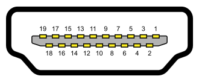

Grafička kartica, Grafički adapter ili video kartica daje i obrađuje dvo-dimenzionalnu ili tro-dimenzionalnu sliku.
Grafički procesor (GPU-graphics processing unit) je glavni deo na kartici, a njegova uloga je prevođenje binarnog koda u vidljivu sliku na nekom grafičkom izlaznom uređaju. Princip je jednostavan, CPU u saradnji sa nekim softverom, kao što je 3D računarska igra, šalje informacije grafičkom procesoru koji potom obrađuje dobijene informacije i šalje ih na monitor. Grafička kartica se ugrađuje u matičnu ploču, obično u AGP ili PCI Express slot. Može štetiti grafičko izlaznom uredjaju na kome je priključeno kućište bez dobre grafičke kartice.
Osnovni atributi grafičkog procesora su frekvencija jezgra koja varira od 250 MHz do 4 GHz, i broja cevovoda ili tzv. šedera, koji prevode 3D prikaz okarakterisan temenima i linijama u 2D prikaz formiran pikselima.
BIOS, odnosno, Video BIOS, sadrži osnovni program koji je obično skriven, koji upravlja operacijama grafičke karte i koji daje instrukcije koje dozvoljavaju hardveru i softveru da komuniciraju sa grafičkom kartom.
Video memorija kod većine savremenih grafičkih karti varira od 128MB do 24GB. Kako video memoriji istovremeno moraju imati pristup i grafički procesor i prikazno kolo, često se koristi specijalna ekspresna ili višeportna memorija, kao što su VRAM, WRAM, SGRAM itd. Od 2003. godine video memorija se tipično bazira na DDR tehnologiji. U godinama koje su usledile proizvođači su prelazili redom na DDR2, DDR3, DDR4, GDDR5 i GDDR6. Brzina memorije na savremenim grafičkim kartama varira od 400 MHz do 4 GHz.

Način povezivanja
Kako se same grafičke karte sa matičnom pločom povezuju preko tri pomenute magistrale (AGP, PCI i PCI-E), način povezivanja sa uređajima za prikaz slike je raznovrsniji:
VGA (Video Graphics Array )
DVI (Digital Visual Interface)
HDMI (High-Definition Multimedia Interface)
DP (Display Port)

Grafičke karte proizvode razne kompanije ali najpopularnije su Nvidia i AMD (Radeon).
Najpoznatiji predstavnici Radeon serija:
Najpoznatiji predstavnici Nvidia serija: